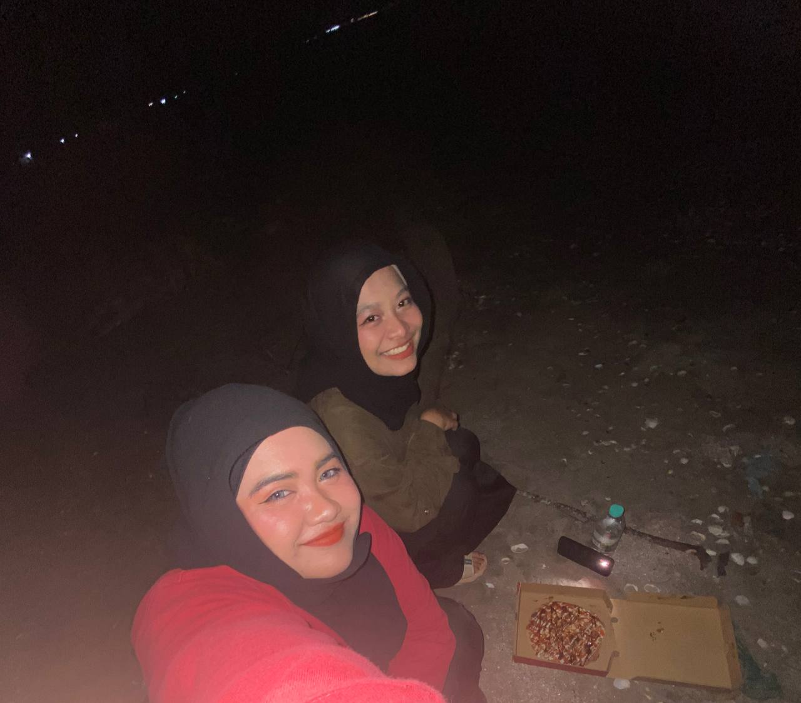

~Family, But Make It a Sitcom ~
Mom is our overachiever in residence...juggling work, life, and oven timers like she’s training for the Olympics. She bakes like she’s trying to bribe the universe into giving her a break. Spoiler alert, it hasn't worked yet.
Dad (stepdad, but legally trapped now) is the patient, kind-hearted guy who wandered into this emotional escape room and decided to stay. We still don’t know why. Maybe he lost a bet?
We're not perfect but perfection is for robots.


My Emotional Support Duo™
Ain (green baju kurung) has tolerated me since Form 1. Basically a saint or a glutton for punishment yet always “understanding”. If loyalty had a face, it would be hers. Probably side-eyeing me, but still.
Shyuhada (black baju kurung) is kind… until she’s not. Loves spoiling me but sometimes she makes my blood pressure rise just for fun, somehow she still ends up making me laugh five minutes later. She's annoying... but she’s my annoying.
Basically, they’re the chaos I chose to keep around. Lucky me. YAY!

Alya & Me: Masters of Mayhem™
Meet Alya, my roommate since day one of semester 1. At first, I thought she was this annoyingly confident queen who could probably win an argument with a brick wall and look stunning doing it. But then she actually talked to me, and boom, instant upgrade: “This girl’s gonna be a ride-or-die friend.”
Her laugh? Oh man, it’s basically a sonic boom. I swear, if laughter was a sport, she’d have gold medals . We’ve been born with built-in megaphones, so whispering is just not in our vocab. Sorry, neighbors, your walls are not thick enough..
We’re both a little… let’s say “uniquely wired.” Mental health warriors who’ve mastered the art of reading each other’s vibes, like telepathy but with chocolates and memes. If one of us is having a “don’t talk to me” day, the other knows and sneaks in snacks and bad jokes to fix it.